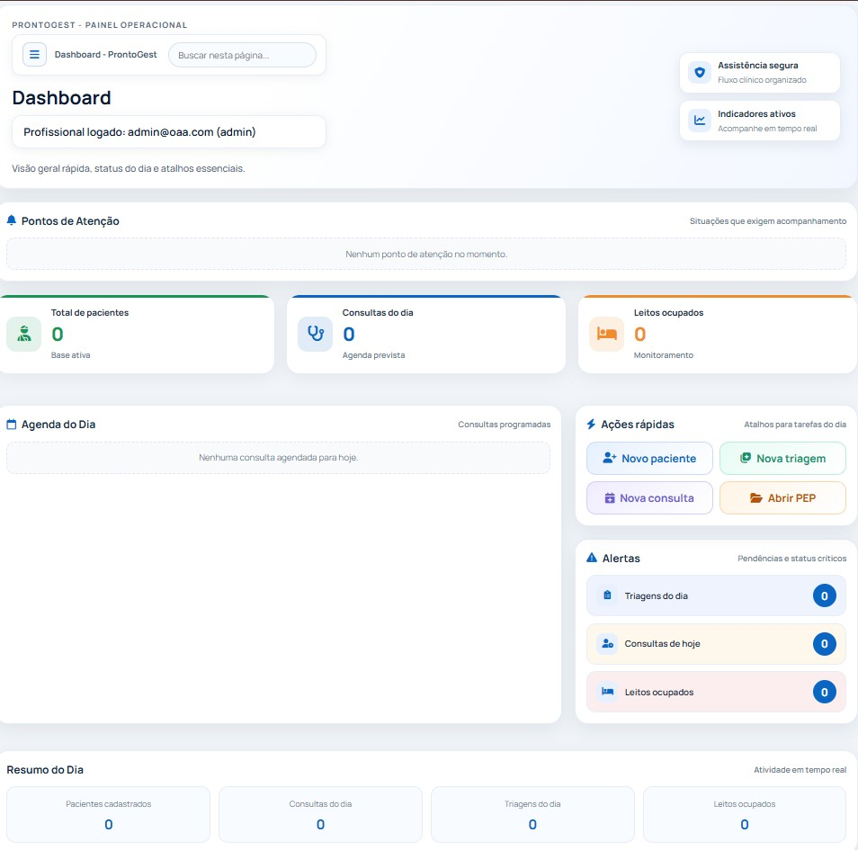
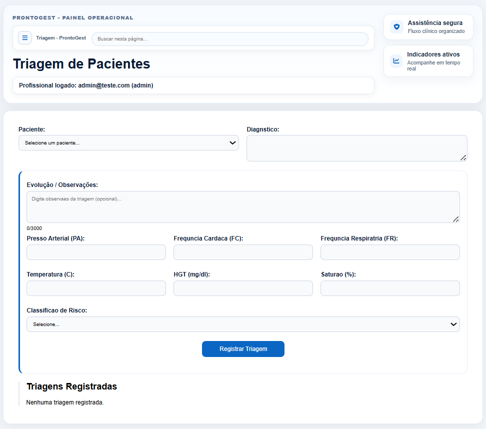
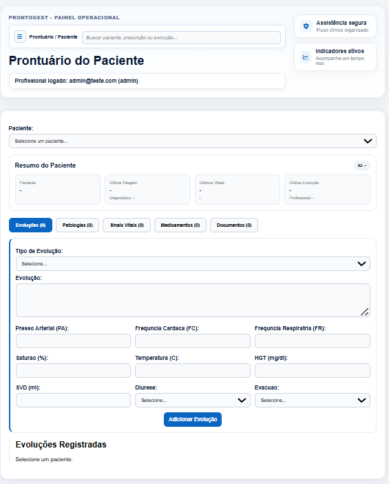
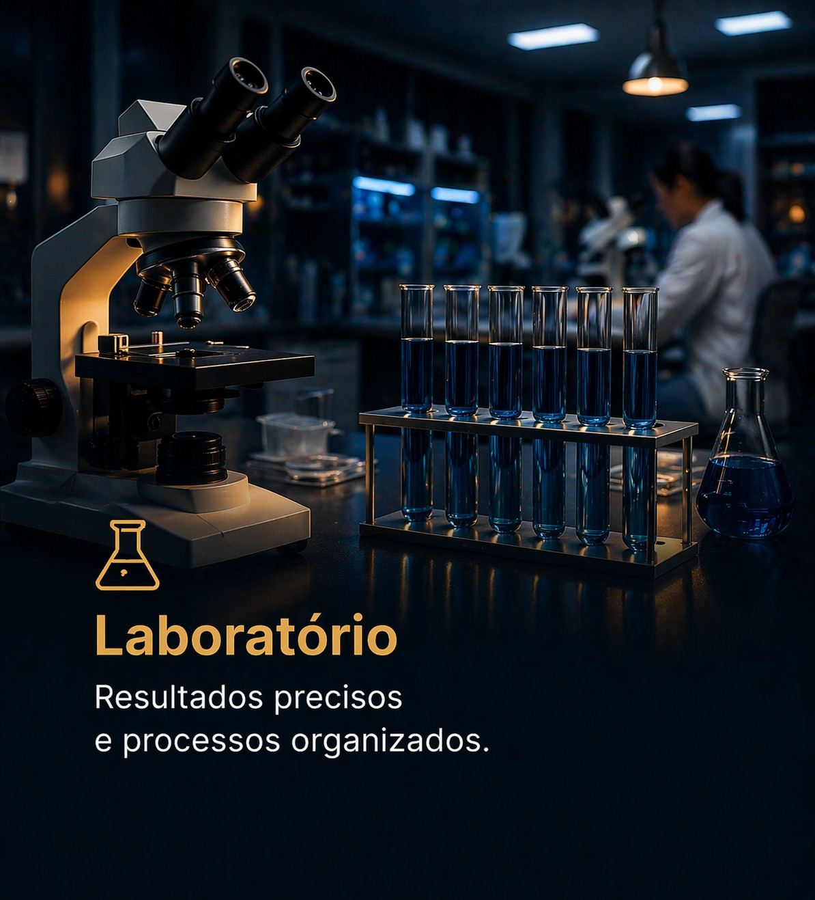

ILPI's
Centralize evolução, medicações e rotina assistencial para acompanhar cada residente com segurança e continuidade.
Sistema completo para triagem, prontuário, prescrições, agenda e gestão clínica — tudo em um único lugar, com mais controle, menos retrabalho e mais tempo para cuidar.

O ProntoGest já está online, com acesso seguro, autenticação, organização por clínica e fluxo estruturado para apoiar a rotina da equipe.


Cada setor tem sua dinâmica, mas todos precisam de controle, rastreabilidade e equipe alinhada para entregar cuidado com qualidade.
Centralize evolução, medicações e rotina assistencial para acompanhar cada residente com segurança e continuidade.
Organize a jornada terapêutica com registros multiprofissionais claros, facilitando acompanhamento e tomada de decisão.
Garanta continuidade no cuidado com histórico acessível, evolução integrada e comunicação mais consistente entre profissionais.
Ganhe fluidez no atendimento com triagem, prontuário e gestão da rotina ambulatorial em um único fluxo organizado.
Tenha agenda, prontuário e acompanhamento clínico conectados para reduzir falhas e otimizar cada consulta.

Padronize registros e etapas operacionais para aumentar controle, reduzir inconsistências e dar mais segurança ao processo.
Integre setores e acompanhe a operação com visão clara de leitos, equipe e processos, mesmo em estruturas enxutas.
A operação vira urgência o tempo todo: informação perdida, retrabalho, equipe sobrecarregada e menos tempo para atender com qualidade.
Cada etapa é feita de um jeito diferente, o que gera falhas, atrasos e insegurança na execução diária.
Evoluções, prescrições e históricos ficam espalhados, e a equipe perde minutos preciosos sempre que precisa decidir rápido.
Quando cada profissional trabalha com informações diferentes, o cuidado perde continuidade e aumenta o risco operacional.
O que já foi feito precisa ser revisado e digitado de novo, consumindo horas da equipe em tarefas repetitivas.
Processos físicos dificultam rastreabilidade, atrasam auditorias e deixam o histórico clínico vulnerável.
Com a agenda tomada por problemas administrativos, sobra menos tempo para o que realmente importa: o paciente.
Sem um fluxo único, a equipe trabalha apagando incêndio. Com o ProntoGest, cadastro, triagem, prontuário, prescrições e gestão passam a conversar entre si.
O resultado é alívio operacional no dia a dia: menos ruído, menos retrabalho, mais segurança nas informações e mais tranquilidade para conduzir a instituição.
Do primeiro atendimento ao acompanhamento contínuo, o ProntoGest conecta etapas importantes da operação em um fluxo mais organizado.
Entrada estruturada do paciente com informações essenciais registradas com clareza.
Coleta inicial de dados clínicos para apoiar um atendimento mais consistente desde o começo.
Histórico, evoluções, sinais vitais e registros importantes centralizados em um só ambiente.
Mais controle sobre medicações e acompanhamento das condutas definidas pela equipe.
Visão mais organizada da ocupação, compromissos e dinâmica operacional da instituição.
Informação mais acessível para acompanhar processos, enxergar gargalos e decidir com mais segurança.
A equipe encontra o que precisa sem perder tempo, agilizando condutas e melhorando a resposta ao paciente.
Com informações centralizadas, o cuidado fica contínuo e a comunicação multiprofissional se torna mais confiável.
Fluxos padronizados diminuem repetições e correções, liberando tempo da equipe para atividades de maior valor.
Registros organizados e rastreáveis reduzem falhas e aumentam a segurança para pacientes, equipe e gestão.
Da recepção ao acompanhamento clínico, a operação ganha clareza para monitorar, corrigir e evoluir com consistência.
A instituição cresce com base em processo, sem depender de improviso para manter qualidade e governança.
O ProntoGest foi pensado para facilitar o dia a dia da equipe, não para criar mais etapas ou burocracia.
Em pouco tempo, sua operação fica mais clara, os registros mais confiáveis e a gestão mais segura para crescer com consistência.
Se a sua equipe já sente o peso da desorganização, este é o momento de estruturar a rotina com mais clareza, segurança e previsibilidade.